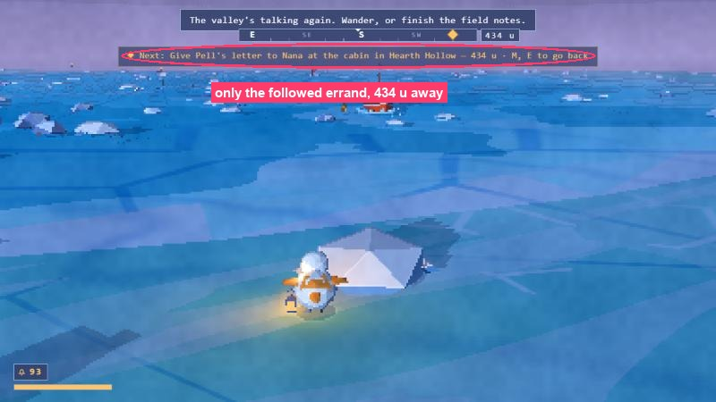
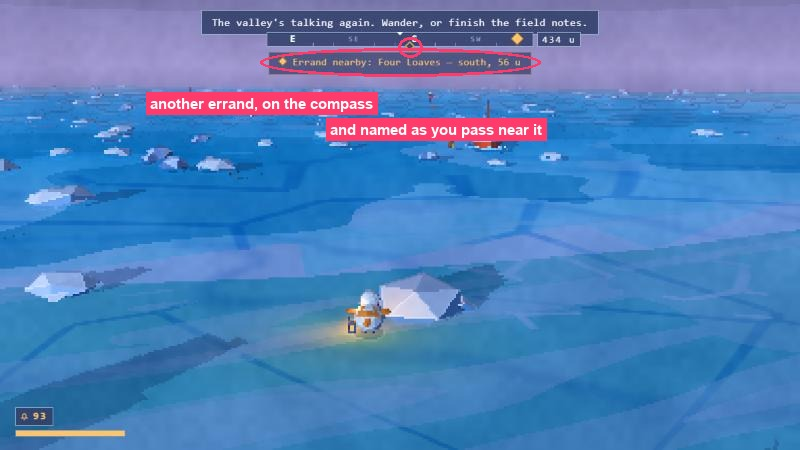
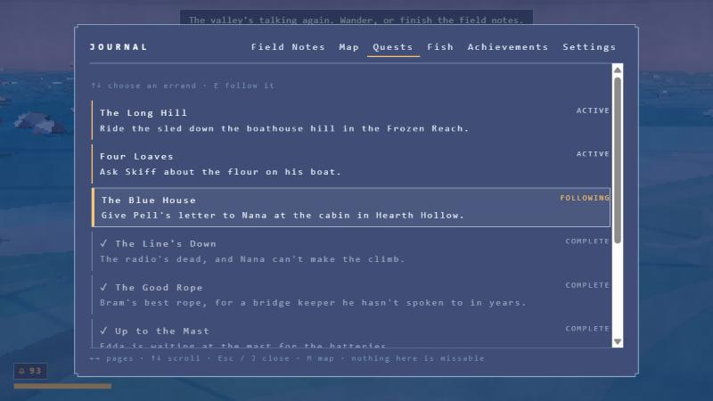
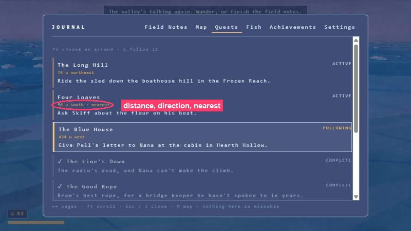

Round 7: finding your errands
The critics' top complaint: with several errands accepted, only the one you follow showed anywhere. The rest were invisible until you opened the journal. Same save in both builds (story finished, three errands open), same spot. Pink marks show where to look. Click to enlarge.
Out in the world
Every other open errand within 200 u gets a hollow amber diamond on the compass, beside the filled one for the errand you follow. When you come within 60 u of one, the line under the goal names it for a few seconds ("Errand nearby: Four Loaves — south, 56 u"), the same way nearby activities are named. Those lines now repeat when you leave and come back, instead of firing once per run.


Journal, Quests page
Each open errand says how far its next stop is and which way, and the nearest is marked. You can pick the near one and follow it with E, as before.


Not visual
- After a conversation closes, E waits 1 s (was 0.6 s) before it can start another, so a slow double press no longer reopens it.
- The "bolder errand marker" from the plan was dropped: after the story the errand you follow already wears the story's marker, and no critic asked for it.